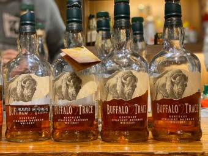

- WILD TURKEY
- Buffalo Trace
- Maker's Mark
가장 전통적인 버번으로 손꼽힌다. 매우 부드러운 바디감을 가지고 있어 올드 패션드같은 클래식 칵테일에 최적이라는 평. 미국 들소 한마리가 그려진 로고 덕분에 야생의 거친 숫소 이미지가 연상되지만 순한 송아지 같은 인상이다. 매쉬 빌(Mash Bill 주정발효원재료비율)에서 호밀 비율이 낮기 때문에(row rye 10% 미만) 쓴맛 없이 순하다. 미국 버번 위스키 특유의 씁슬하고 독하다는 느낌은 짧은 숙성년수와 호밀 함량 때문인데, 버팔로 트레이스의 경우 9~11년 사이의 긴 숙성년수[13]와 낮은 호밀 호밀함량으로 미국 위스키가 독하다는 편견을 깨버린다.
